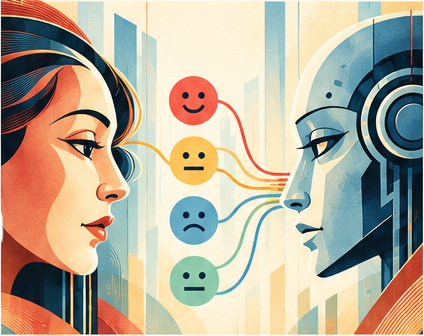

NAACL 2024
Can language model moderators improve the health of online discourse?
NAACL-HLT 2024
How can AI understand and respond intelligently to human emotion?
This interdisciplinary, project-based course brings together ideas from artificial intelligence, psychology, and human-centered design to explore how emotion shapes human behavior and how computational systems can recognize, model, and influence it.
View a Previous Course Syllabus →
Working in interdisciplinary teams, students identify a real-world problem, propose and pitch an affective computing solution, build a prototype using existing AI tools, and design an evaluation to determine whether it works.
Students should have prior preparation through one of two routes.
Students should have substantial programming experience (e.g., CS 2201, CS 2204 or equivalent); prior coursework in artificial intelligence or machine learning is recommended.
Students should have completed an introductory statistics course (e.g., PSY 2100 or PSY-PC 2110) and a course in experimental design or research methods (PSY 2150, PSY-PC 2170 or PSY-PC 2180, or equivalent). More advanced statistics coursework (e.g., PSY-PC 2120) would be beneficial.
Course projects can become genuine research. These examples show how student work has developed into peer-reviewed publications.
Past projects have explored a wide range of applications across emotion, AI, interaction, media, and human behavior.
See a previous offering for a detailed example of topics, readings, assignments, and course structure.
View a Previous Course Syllabus →